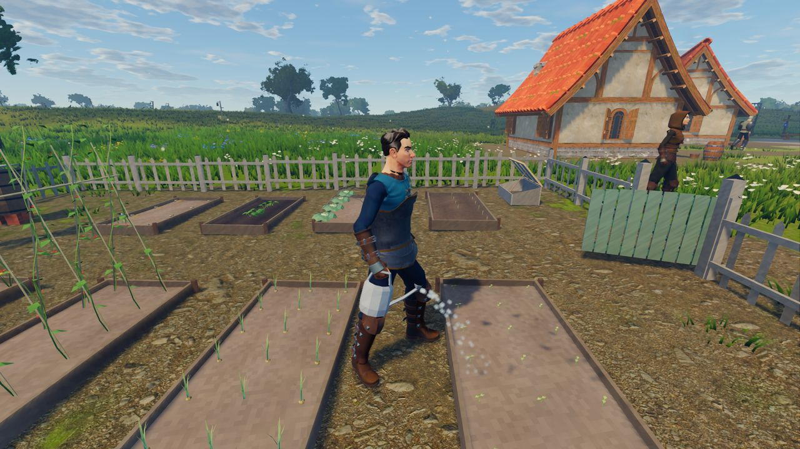
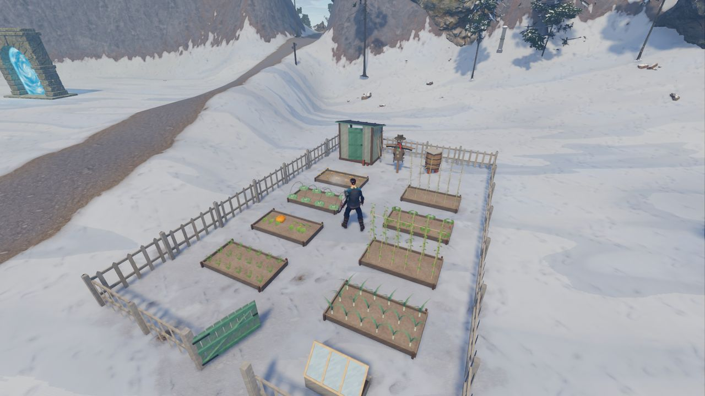
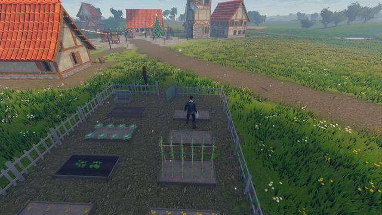
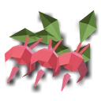

Allotments A plot of your own at every town's allotments: rent, Gardening, the fourteen crops and how they grow, the six Seedsmen, the quest and the deeds.
Every town has allotments (1.14.114): a fenced field of eight raised beds by the edge of town, with a potting shed, a water butt and a Seedsman at the gate. Talk to the Seedsman to rent a plot by the week, paid up to four weeks ahead. Moving your plot to another town keeps the weeks you paid for. Everyone works the same eight beds, and each hero sees only their own crops growing in them.
Gardening is a secondary profession. You start with four beds and gain one at every fifteen levels of Gardening, up to all eight at 60. There are fourteen crops, from carrots, sage and marigolds at level 1 to pumpkins at 50. Seeds come from the Seedsmen, and what you lift sells to any merchant or goes into the cook's pot.
Stand by a bed to sow, water, weed or harvest it. A crop grows at full speed while the soil is wet and at half speed when it is dry, so water it each time the soil dries out; it never dies of thirst. Weeds come up in a bed left alone for two days, one more every two days up to three, and each costs 15% of the harvest until you pull it. A ready crop left two days goes over and gives nothing: dig it over and sow again. The Garden window shows each bed's stage, how long it has to go and what it needs next.
When you enter the world, a line in chat tells you if anything is ready, if a bed has gone over, or if the rent is due, and while you play you are told when a bed turns ready. The world map shows a green sprout by the town that holds your plot, with what is ready under its name; hover over the town for how many beds are growing, ready or gone over, and how long the rent is paid for.
From level 5, Nettie Dibble at Millbrook Farms shows you the ropes in First Sowing : rent a plot, sow some carrots, water them and lift them.
The deeds: First Harvest (harvest a crop from your own plot at the allotments), Green Fingers (harvest a hundred crops from your plot), Every Seed in the Packet (harvest every crop the allotments grow, from carrots to pumpkins) and A Full Plot (have all eight beds of your plot growing at once).
Grow marigolds or sweet peas and a Seedsman will help you put them in a jar for your room at the inn.


The allotments Crops Jars for your room
The allotments6 “Four beds to start you off. Dig them, sow them, water them, and come back when they're grown.”
Town Harrowford Seedsman Hollis Furrowby Rent 20 gold a week, paid up to four weeks ahead The field A fenced field of eight raised beds by the edge of town, with a potting shed, a water butt and the Seedsman at the gate Sells Seed for all fourteen crops “The farm's own soil, and the best of it for the plots. Mind you water it.”
Town Millbrook Farms Seedsman Nettie Dibble Rent 20 gold a week, paid up to four weeks ahead The field A fenced field of eight raised beds by the edge of town, with a potting shed, a water butt and the Seedsman at the gate Sells Seed for all fourteen crops 
“The wood gives the soil its goodness. The plots by the trees grow the sweetest herbs.”
Town Lisswen Hollow Seedsman Briar Quickthorn Rent 30 gold a week, paid up to four weeks ahead The field A fenced field of eight raised beds by the edge of town, with a potting shed, a water butt and the Seedsman at the gate Sells Seed for all fourteen crops “Salt air is hard on a seedling. Water them well and they'll toughen up.”
Town Gullhaven Seedsman Oswin Saltmarsh Rent 45 gold a week, paid up to four weeks ahead The field A fenced field of eight raised beds by the edge of town, with a potting shed, a water butt and the Seedsman at the gate Sells Seed for all fourteen crops “Ash makes good soil, if you're patient with it. Everything here grows on what the fire left.”
Town Emberwatch Camp Seedsman Garrow Ashbed Rent 60 gold a week, paid up to four weeks ahead The field A fenced field of eight raised beds by the edge of town, with a potting shed, a water butt and the Seedsman at the gate Sells Seed for all fourteen crops “Up here the beds want covering at night. The rest is water and patience.”
Town Highwatch Keep Seedsman Juniper Frostcroft Rent 80 gold a week, paid up to four weeks ahead The field A fenced field of eight raised beds by the edge of town, with a potting shed, a water butt and the Seedsman at the gate Sells Seed for all fourteen crops Crops14 Sweet, orange and still smelling of the earth. Grown in an allotment. Cook it, or sell it to a merchant.
Gardening Level 1 to sow it Seed Carrot Seed , 4 gold a packet from any SeedsmanGrows In 2 hours if watered twice, each time the soil dries; dry soil grows it at half speed Harvest Carrot × 3 to 5, less for each weed in the bed; one more for a gardener 20 levels past the cropSells for 2 gold each, to any merchant Used in Cook Allotment Stew Gardening experience Sowing 5, watering 3, weeding 3, harvesting 13; half once you are 12 levels past the crop, a quarter at 25 Soft grey-green leaves for the pot and the teapot. Grown in an allotment. Cook it, or sell it to a merchant.
Gardening Level 1 to sow it Seed Sage Seed , 4 gold a packet from any SeedsmanGrows In an hour and a half if watered once, each time the soil dries; dry soil grows it at half speed Harvest Sprig of Sage × 2 to 4, less for each weed in the bed; one more for a gardener 20 levels past the cropSells for 2 gold each, to any merchant Used in Brew Sage and Thyme Tea Gardening experience Sowing 5, watering 3, weeding 3, harvesting 13; half once you are 12 levels past the crop, a quarter at 25 A bright orange bloom. Keeps the flies off the beans, they say. Grown in an allotment. Put it in a vase in your room.
Gardening Level 1 to sow it Seed Marigold Seed , 5 gold a packet from any SeedsmanGrows In 2 hours if watered once, each time the soil dries; dry soil grows it at half speed Harvest Marigold × 2 to 4, less for each weed in the bed; one more for a gardener 20 levels past the cropSells for 3 gold each, to any merchant Used in Arrange a Jar of Marigolds Gardening experience Sowing 5, watering 3, weeding 3, harvesting 13; half once you are 12 levels past the crop, a quarter at 25 A long white leek, green at the top. The making of a stew. Grown in an allotment. Cook it, or sell it to a merchant.
Gardening Level 5 to sow it Seed Leek Seed , 6 gold a packet from any SeedsmanGrows In 3 hours if watered twice, each time the soil dries; dry soil grows it at half speed Harvest Leek × 3 to 5, less for each weed in the bed; one more for a gardener 20 levels past the cropSells for 3 gold each, to any merchant Used in Cook Allotment Stew Gardening experience Sowing 6, watering 3, weeding 3, harvesting 17; half once you are 12 levels past the crop, a quarter at 25 Small, waxy and thin of skin. Boil them and eat them warm. Grown in an allotment. Cook it, or sell it to a merchant.
Gardening Level 8 to sow it Seed Early Potato Seed , 8 gold a packet from any SeedsmanGrows In 4 hours if watered twice, each time the soil dries; dry soil grows it at half speed Harvest Early Potato × 4 to 7, less for each weed in the bed; one more for a gardener 20 levels past the cropSells for 3 gold each, to any merchant Used in Cook Allotment Stew and Bake Plotholder's Pie Gardening experience Sowing 7, watering 4, weeding 3, harvesting 20; half once you are 12 levels past the crop, a quarter at 25 A round brown onion, dried a day on the bed. Grown in an allotment. Cook it, or sell it to a merchant.
Gardening Level 12 to sow it Seed Onion Seed , 9 gold a packet from any SeedsmanGrows In 4 hours if watered twice, each time the soil dries; dry soil grows it at half speed Harvest Onion × 3 to 6, less for each weed in the bed; one more for a gardener 20 levels past the cropSells for 4 gold each, to any merchant Used in Bake Plotholder's Pie and Cook Pumpkin Soup Gardening experience Sowing 8, watering 4, weeding 4, harvesting 24; half once you are 12 levels past the crop, a quarter at 25 Tiny leaves with a big smell. A pinch goes a long way. Grown in an allotment. Cook it, or sell it to a merchant.
Gardening Level 15 to sow it Seed Thyme Seed , 10 gold a packet from any SeedsmanGrows In 3 hours if watered twice, each time the soil dries; dry soil grows it at half speed Harvest Bunch of Thyme × 2 to 5, less for each weed in the bed; one more for a gardener 20 levels past the cropSells for 5 gold each, to any merchant Used in Brew Sage and Thyme Tea and Cook Buttered Beans Gardening experience Sowing 8, watering 4, weeding 4, harvesting 27; half once you are 12 levels past the crop, a quarter at 25 Fat green beans in a furry pod. Grown in an allotment. Cook it, or sell it to a merchant.
Gardening Level 18 to sow it Seed Broad Beans Seed , 12 gold a packet from any SeedsmanGrows In 5 hours if watered three times, each time the soil dries; dry soil grows it at half speed Harvest Broad Beans × 4 to 7, less for each weed in the bed; one more for a gardener 20 levels past the cropSells for 5 gold each, to any merchant Used in Cook Buttered Beans Gardening experience Sowing 9, watering 5, weeding 4, harvesting 30; half once you are 12 levels past the crop, a quarter at 25 
Gardening 22 · Root A deep red root that stains everything it touches. Grown in an allotment. Cook it, or sell it to a merchant.
Gardening Level 22 to sow it Seed Beetroot Seed , 14 gold a packet from any SeedsmanGrows In 6 hours if watered twice, each time the soil dries; dry soil grows it at half speed Harvest Beetroot × 3 to 6, less for each weed in the bed; one more for a gardener 20 levels past the cropSells for 6 gold each, to any merchant Used in Bake Plotholder's Pie Gardening experience Sowing 10, watering 5, weeding 5, harvesting 34; half once you are 12 levels past the crop, a quarter at 25 A bunch of frilled flowers in pink and violet, sweetly scented. Grown in an allotment. Put it in a vase in your room.
Gardening Level 26 to sow it Seed Sweet Peas Seed , 16 gold a packet from any SeedsmanGrows In 6 hours if watered three times, each time the soil dries; dry soil grows it at half speed Harvest Sweet Peas × 3 to 5, less for each weed in the bed; one more for a gardener 20 levels past the cropSells for 8 gold each, to any merchant Used in Arrange a Jar of Sweet Peas Gardening experience Sowing 11, watering 6, weeding 5, harvesting 38; half once you are 12 levels past the crop, a quarter at 25 A heavy green head, tight as a fist. Grown in an allotment. Cook it, or sell it to a merchant.
Gardening Level 30 to sow it Seed Cabbage Seed , 18 gold a packet from any SeedsmanGrows In 8 hours if watered three times, each time the soil dries; dry soil grows it at half speed Harvest Cabbage × 1 or 2, less for each weed in the bed; one more for a gardener 20 levels past the cropSells for 20 gold each, to any merchant Gardening experience Sowing 12, watering 6, weeding 6, harvesting 42; half once you are 12 levels past the crop, a quarter at 25 Long, flat beans off the canes. Pick them young. Grown in an allotment. Cook it, or sell it to a merchant.
Gardening Level 36 to sow it Seed Runner Beans Seed , 22 gold a packet from any SeedsmanGrows In 8 hours if watered three times, each time the soil dries; dry soil grows it at half speed Harvest Runner Beans × 5 to 9, less for each weed in the bed; one more for a gardener 20 levels past the cropSells for 7 gold each, to any merchant Used in Cook Buttered Beans Gardening experience Sowing 14, watering 7, weeding 6, harvesting 48; half once you are 12 levels past the crop, a quarter at 25 Red, ripe and warm from the sun. Grown in an allotment. Cook it, or sell it to a merchant.
Gardening Level 42 to sow it Seed Strawberry Runners , 28 gold a packet from any SeedsmanGrows In 10 hours if watered four times, each time the soil dries; dry soil grows it at half speed Harvest Strawberry × 4 to 8, less for each weed in the bed; one more for a gardener 20 levels past the cropSells for 10 gold each, to any merchant Used in Boil Strawberry Jam Gardening experience Sowing 15, watering 8, weeding 7, harvesting 54; half once you are 12 levels past the crop, a quarter at 25 A great orange pumpkin. It took a day and a night to grow. Grown in an allotment. Cook it, or sell it to a merchant.
Gardening Level 50 to sow it Seed Pumpkin Seed , 45 gold a packet from any SeedsmanGrows In 20 hours if watered four times, each time the soil dries; dry soil grows it at half speed Harvest Pumpkin × 1 or 2, less for each weed in the bed; one more for a gardener 20 levels past the cropSells for 80 gold each, to any merchant Used in Cook Pumpkin Soup Gardening experience Sowing 17, watering 9, weeding 8, harvesting 62; half once you are 12 levels past the crop, a quarter at 25 Jars for your room2 Six marigolds of your own, put in a jar for your room.
Needs Marigold × 6Makes Jar of Marigolds for your room at the innWhere With any Seedsman's help, at the allotments Experience 20 Gardening Six sweet peas of your own, put in a jar for your room.
Needs Sweet Peas × 6Makes Jar of Sweet Peas for your room at the innWhere With any Seedsman's help, at the allotments Experience 50 Gardening